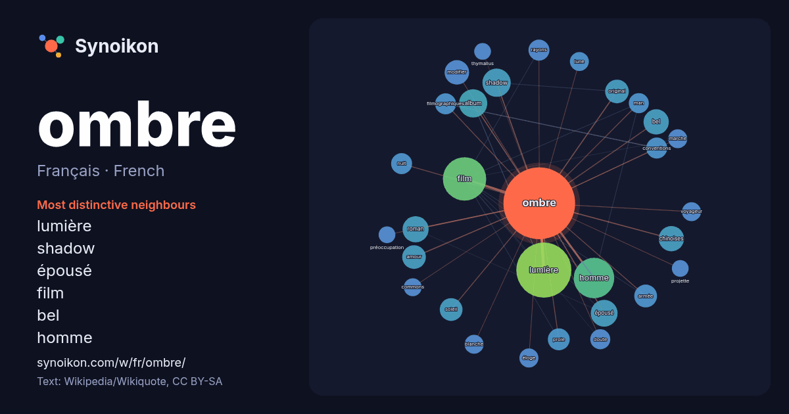

Français · French · word of the day list
ombre
“shadow” · The words found around it in 1073 instances from French Wikipedia, Wikiquote.

Most distinctive neighbours
- lumière 58×
- shadow 21×
- épousé 18×
- film 16×
- bel 16×
- homme 16×
- modifier 15×
- chinoises 14×
- amour 13×
- original 13×
- proie 12×
- filmographiques 12×
- conventions 12×
- soleil 12×
- rayons 11×
- armée 11×
- roman 11×
- man 10.0×
- éloge 9.9×
- album 9.8×
× = how many times more often than in general French Wikipedia text.
Most frequent neighbours
- lumière 76
- film 47
- homme 41
- album 20
- français 20
- shadow 20
- épousé 18
- partie 17
- roman 17
- série 17
- bel 16
- chinoises 16
- espèce 15
- femme 15
- modifier 15
- amour 14
- original 14
- armée 13
- soleil 13
- terre 13
In context
- photographie s'occupe de la répartition des ombres dans l'image. Forme des ombres Ombre propre et ombre portée de trois formes géométriques simples. Wikipedia snippets · Ombre
- septembre 2026 à 10:25. L'Ombre de ton ombre Production Diffusion modifier - modifier le code - voir Wikidata (aide) L'Ombre de ton ombre est une série télévisée Wikipedia snippets · L'Ombre de ton ombre
- conventions filmographiques. Dans leur ombre Pour plus de détails, voir Fiche technique et Distribution. Dans leur ombre (The Strays) est un thriller d'horreur Wikipedia snippets · Dans leur ombre
- L'Ombrie (prononcé : /ɔ̃.bʁi/ ; en italien : Umbria, /ˈumbrja/) est une région d'Italie centrale. Lors du recensement de 2017, elle est peuplée de 885 081 ha … Wikipedia snippets · Ombrie
- Comme une ombre Pour plus de détails, voir Fiche technique et Distribution. Comme une ombre est un téléfilm franco-belge réalisé par Elsa Blayau d'après Wikipedia snippets · Comme une ombre
- Pour les articles homonymes, voir ombre. L'ombre est une partie de la psyché formée de la part individuelle qui ne se connaît pas elle-même, et dont l’existence Wikipedia snippets · Ombre (psychologie analytique)
- simulacre. Sur les autres projets Wikimedia : ombre portée, sur le Wiktionnaire L'enseignement du dessin des ombres portées fait l'objet de tout ou partie de Wikipedia snippets · Ombre portée
- voir J'ai épousé une ombre. J'ai épousé une ombre Pour plus de détails, voir Fiche technique et Distribution. J'ai épousé une ombre est un film français Wikipedia snippets · J'ai épousé une ombre (film)
More French words
- art
- automne
- carte
- chanson
- chat
- chemin
- cheval
- chien
- climat
- cloche
- cœur
- dieu
- désert
- eau
- famille
- forêt
- histoire
- hiver
- horloge
- jardin
- langue
- miel
- miroir
- monnaie
- montagne
- mort
- mère
- nature
- nourriture
- pain
- pluie
- pont
- pouvoir
- printemps
- santé
- science
- sel
- silence
- temps
- tempête
- thé
- train
- travail
- trésor
- vie
- ville
- vérité
- étoile
- île
Precomputed on 2026-10-09 with default settings (±5 words, medium corpus). The interactive map can refresh it with live data.